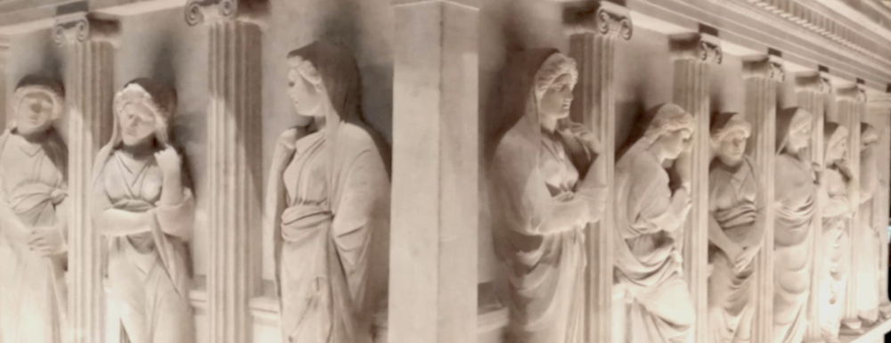

Sometimes, a change in perspective changes everything
“ Les soleils mouillés De ces ciels brouillés Pour mon esprit ont les charmes Si mystérieux De tes traîtres yeux, Brillant à travers leurs larmes.”